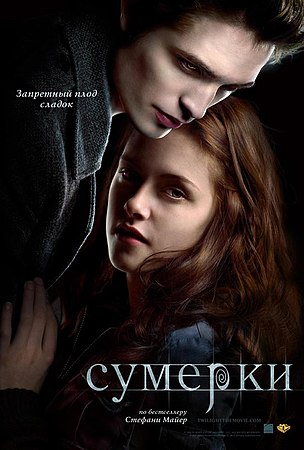

Сумерки 2008 фильм
17-летняя Белла Свон переезжает к своему отцу (Чарли) в Форкс, потому что её мама Рене живёт с новым мужем Филом, и они вынуждены всё время переезжать. В Форксе Белла встречает загадочную и очень красивую семью Калленов. Их объединяют редкие черты: глаза золотистого цвета и необычайная бледность и холодность кожи. Эдвард Каллен странно реагирует на Беллу (как выясняется позднее, он вампир и никогда не встречал такого дивного запаха крови, как у Беллы). Однако вскоре он спасает Беллу от минивэна, а затем от уличных хулиганов, чем заставляет задуматься над его настоящей сущностью.
Эдвард и Белла влюбляются друг в друга. Он знакомит её с семьёй. Каллены называют себя вегетарианцами, так как пьют только кровь животных. Они приглашают Беллу на бейсбол, где она сталкивается с тремя кочующими вампирами. Аромат Беллы сводит одного из них — Джеймса — с ума. Эдвард защищает свою возлюбленную, но это только подогревает аппетит Джеймса. Он решает во что бы то ни стало убить её и начинает преследование Беллы.
Белла, думая, что спасает мать от Джеймса, приходит в балетную студию, где раньше брала уроки. Джеймс кусает Беллу, но Эдвард высасывает яд и спасает возлюбленную, а его братья и Элис убивают врага. Когда Эдвард и Белла танцуют на балу по случаю окончания учебного года, из окна на них смотрит возлюбленная Джеймса — Виктория, также находившаяся на балу.